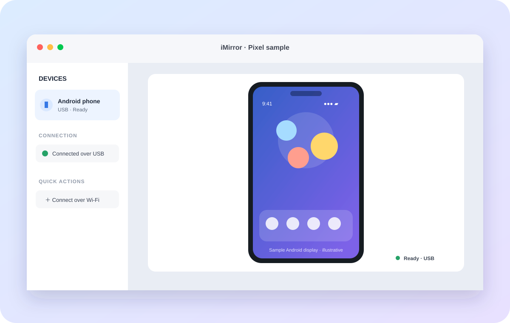

USB or Wi-Fi
Connect by cable, or pair through Android Wireless debugging on a trusted shared network.
See and control your Android phone from a focused macOS workspace. Connect over USB or Wi-Fi, navigate naturally, and save the moments you need.
Signed and notarized for macOS 14+ · Apple silicon and Intel · Android device required.

iMirror brings familiar Mac controls to an Android screen, without turning a quick task into a setup project.
Connect by cable, or pair through Android Wireless debugging on a trusted shared network.
Tap, swipe, and scroll with your mouse or trackpad. Keep Back, Home, and Recents close by.
Save a PNG screenshot or record silent MP4 video to a folder you choose.
Paste text into the focused Android field from your Mac clipboard when you choose.
Mirror sessions connect directly to your device. iMirror does not send your screen to an Our Apps World server.
If Android Platform-Tools are missing, review Google's terms and let iMirror set them up for this Mac.
One-time Android setup gives your Mac permission to communicate with your device.
Turn on Developer options and USB debugging on Android, then connect the phone and approve its trust prompt.
Open iMirror and select the authorized device. For Wi-Fi, pair from Android Wireless debugging first.
Start mirroring, use Mac navigation and input, and save captures wherever you choose.
The manual covers USB setup, Wi-Fi pairing, controls, captures, and common connection issues.
Clear answers about compatibility, network access, and saved media.
iMirror uses Android Debug Bridge. Connect by USB with USB debugging enabled, or pair Wireless debugging on Android 11 or later over a trusted shared Wi-Fi network.
No. The screen stream is sent directly between the Android device and your Mac over USB or your configured local network. iMirror does not route screen content through an Our Apps World server.
Yes. Save a PNG screenshot or an MP4 video recording to a location you choose. Recordings contain video only and do not include audio.
iMirror requires macOS 14 or later and an Android phone or tablet with debugging enabled.